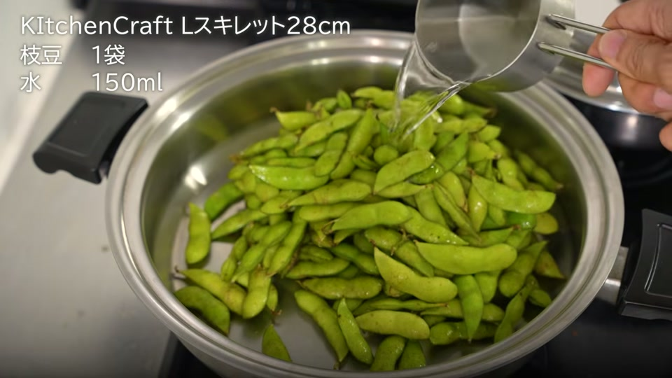
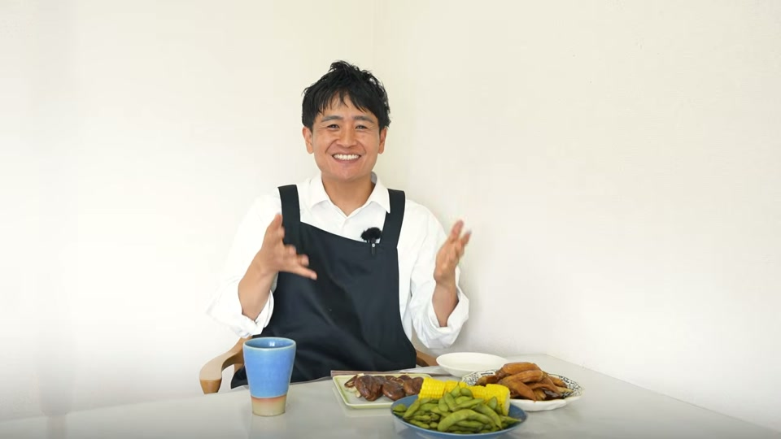

「ステンレス鍋を買ったけれど、いまいち使いこなせていない」 「暑い時期に長時間の調理や洗い物をするのが面倒」
そう感じている方におすすめなのが、ステンレス鍋の特徴である高い熱伝導性と保温性を活かした「ほったらかし調理」です。
結論からお伝えすると、ステンレス鍋を使えば包丁もまな板も使わずに、材料を入れて蓋をして放置するだけで極上のおつまみが完成します。調理中に他の家事を済ませたり、先に晩酌を始めたりすることも可能です。
本記事では、ステンレス鍋を活用して手軽に作れるおつまみ5品のレシピと、焦げ付かせない火加減のコツをわかりやすく解説します。
鍋に入れて放っておくだけ！簡単おつまみ5品の作り方

包丁やまな板を一切使わず、食材と調味料を鍋に入れて火にかけるだけで作れるおつまみ5品を紹介します。
1. 鶏手羽先の煮物（1品目）
水や出汁を使わず、調味料の水分と鶏肉自体の旨味でじっくり煮込む一品です。
- 材料
- 鶏手羽先
- 調味料（みりん：醤油：酒＝3：2：1の割合）
- 作り方
- 鍋に手羽先と調味料（みりん3：醤油2：酒1）を入れます。
- 蓋をして中火〜弱火で煮込みます。
- 火を止め、そのまま放置して冷まします。火から下ろして温度が下がっていく過程で、中までしっかりと味が染み込みます。
2. 枝豆＆トウモロコシの蒸し茹で（2品目・3品目）
茹で時間が同じ食材（枝豆とトウモロコシ）を1つの鍋でまとめて調理します。たっぷりのお湯で茹でるのではなく、少量の水で無水風に蒸し茹でにするのがポイントです。
- 材料
- 枝豆
- トウモロコシ
- 水（150ml）
- 作り方
- 鍋に枝豆とトウモロコシを一緒に入れます。
- 水150mlを入れて蓋をします。
- 沸騰したら弱火にし、7分間加熱して完成です。
少量の水で蒸し茹でにするため、ビタミンや食材本来の甘み・旨味が湯に逃げず、濃厚な味わいに仕上がります。
4. 焼き餃子＆焼き椎茸（4品目・5品目）
チルド餃子を焼く際、鍋の余ったスペースで椎茸も同時に焼き上げます。
- 材料
- チルド餃子
- 椎茸
- 油
- 作り方
- 冷たい状態の鍋に油を引きます。
- 餃子と、空いたスペースに椎茸を並べます。
- 蓋をして弱火にかけ、蒸気が出てくるまでじっくり焼きます。
ステンレス鍋調理で失敗しない火加減と使い方のポイント

ステンレス鍋で「焦げ付く」「うまく加熱できない」とお悩みの方は、以下の3つのポイントを押さえておきましょう。
| 調理のポイント | 具体的なコツと理由 |
|---|---|
| 基本の火加減 | 中火で加熱を開始し、沸騰や蒸気が出たら弱火に落として放置します。高熱を維持し続ける必要はありません。 |
| 焼き物は冷たい鍋から | 餃子などを焼く場合は、冷たい鍋に油と食材をセットしてから弱火で加熱することで焦げ付きを防ぎ、綺麗に仕上がります。 |
| 余熱と冷ます時間を活用 | 煮物は火を止めた後、温度が下がっていく冷める過程で味が深くまで浸透します。加熱が終わったら放置しておきましょう。 |
ほったらかし調理の時間は、キッチンを離れて掃除や洗濯などの家事をこなしたり、のんびり晩酌を楽しんだりする時間に充てられるため、日々の家事効率が大きく向上します。
よくある質問（FAQ）
Q. 枝豆を茹でるときに水を少量（150ml）にするのはなぜですか？
A. たっぷりのお湯で茹でると、枝豆のビタミンや旨味成分、鮮やかな色が湯に溶け出してしまうためです。150mlほどの少量の水で蒸し茹で状態にすることで、旨味と甘みを豆の中にしっかり閉じ込めることができます。
Q. ステンレス鍋で餃子を焼くと焦げ付きませんか？
A. 加熱した熱い鍋に直接食材を入れると焦げ付きやすくなります。まだ火をつけていない「冷たい鍋」に油を引き、餃子を並べてから弱火でゆっくり加熱（蓋をして蒸気が出るまで）することで、くっつかずに綺麗に焼くことができます。
Q. 煮物に味がしっかり染み込むタイミングはいつですか？
A. 加熱している最中だけでなく、火を止めて鍋の温度が下がっていく（冷めていく）タイミングで食材の中に味が染み込んでいきます。加熱後は焦らず放っておくのが美味しく仕上げるコツです。
動画で紹介されているアイテム・サービス
動画内で使用・紹介されているステンレス鍋、調理器具、こだわりの調味料などの一覧です。
- キッチンクラフト 鍋シリーズ（スキレット・2コート）（※購入時備考欄に「大澤チャンネル見ました」と記載すると特典あり）
- 大澤チャンネル 公式Instagram
- 大澤チャンネル オリジナル商品サイト（ステンレス菜箸、鍋磨き用ブラシなど）
- ステンレス鍋 中古品サイト（PayPayフリマ）
- 安全な浄水器「Re」（※メッセージ欄記載で特典あり）
- 国産置き型浄水器 beaq
- 予算1万円のおすすめお鍋
- 予算2万円のおすすめお鍋
- ヘンケルス オールステンレス包丁
- 頑丈な大さじ
- ピッチャー型浄水器リセラ
- スリムなホイッパー
- 取り外せる優秀なキッチンばさみ
- 岐阜の３年みりん
- 安全で美味しいしょうゆ
- 美濃三年酢
- ピンクの塩
- スタイリッシュなピーラー
- 安全なステンレスケトル
- 内窯ステンレスな炊飯器
- 楽天ROOM おすすめグッズ一覧
- 酵素玄米炊飯器
まとめ：ステンレス鍋を活用して手軽に美味しい料理を楽しもう
ステンレス鍋の優れた保温性と熱伝導性を活用すれば、包丁やまな板を使わずに食材を鍋に入れて「ほったらかすだけ」で美味しい料理が作れます。
- 手羽先の煮物：水なし・調味料のみで放置して味を染み込ませる
- 枝豆＆トウモロコシ：水150ml・7分加熱で旨味を凝縮
- 餃子＆椎茸：冷たい鍋から弱火でじっくり焼いて焦げ付き防止
火加減と「冷める過程で味が染み込む」性質を理解しておけば、毎日の調理や洗い物の負担を大幅に減らすことができます。ぜひステンレス鍋を使いこなして、手軽でおいしい「ほったらかしおつまみ」を試してみてください。